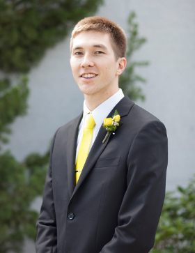

Home
Hello!
You have reached the website of Eric Robert Brewer.
Who?
- I'm from the San Francisco Bay Area, California, USA!
- I served a 2-year, full-time proselyting and service mission for the Church of Jesus Christ of Latter-day Saints in Quezon City, Philippines from September 2013 to September 2015.
- I and my wonderful wife were married and sealed in the Oakland California Temple in 2016.
- My professional background is in Android and iOS app development.
- I'm currently a student in the MS in computer science program at Brigham Young University. My focus subjects include Information Retrieval and Machine Learning.